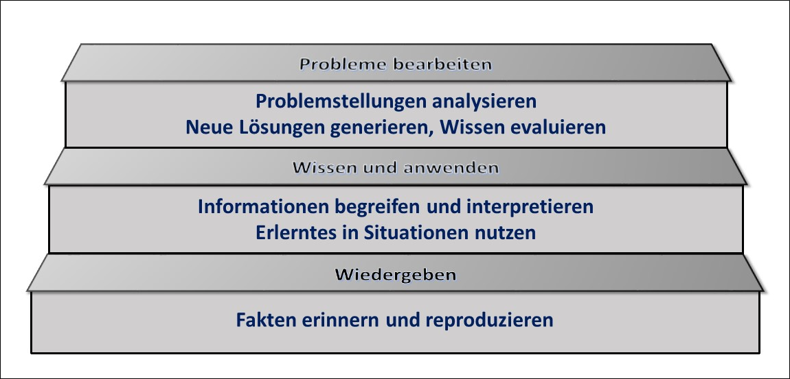

Kompetenzen stufenweise aufbauen!
Kompetenzen als Lernergebnis werden Schritt für Schritt erworben. Dieser stufenweise Aufbau kann durch verschiedene Lernzieltaxonomien beschrieben werden.
Um Probleme bearbeiten und lösen zu können, ist zunächst Faktenwissen erforderlich. Darauf aufbauend müssen neue Informationen interpretiert und je nach Problemsituation angewendet werden können, um letztlich neue Lösungen generieren zu können.
Die Taxonomie von Metzger & Nüesch (2004) hat sich in der Praxis bewährt, um diesen hierarchischen Aufbau von Kompetenzen in Form von aufeinander aufbauenden Stufen zu beschreiben.

Am Beispiel des statistischen Testens wird dieser Stufenaufbau deutlich:
Um ein statistisches Testproblem wie den Mittelwertvergleich zweier unabhängiger Stichproben durchführen zu können, muss ich zunächst über Grundwissen (Faktenwissen) aus dem Bereich der Statistik verfügen (Messniveau von Merkmalen, Voraussetzungen z. B. des t-Tests etc.). Im nächsten Schritt muss ich dieses theoretische Wissen anwenden, um Informationen über die mir vorliegenden Daten interpretieren zu können und entscheiden, welcher Test dem Testproblem angemessen ist. Schließlich muss ich den Test auch tatsächlich mit den entsprechenden Hilfsmitteln (z.B. einer Statistiksoftware) durchführen und das Ergebnis analysieren können.
Mit Hilfe dieses Rahmenmodells können Sie ebenfalls kompetenzorientierte Lernziele als Grundlage für die Gestaltung von Lehr- und Lernprozessen sowie von Prüfungen formulieren.
Faktenwissen muss reproduzierbar wiedergeben werden können, um darauf aufbauend angewendet werden zu können. Beides ist schließlich erforderlich, um Probleme zu bearbeiten.
Der Lernweg geht somit vom Wiedergeben über das Wissen und Anwenden hin zum Probleme bearbeiten.